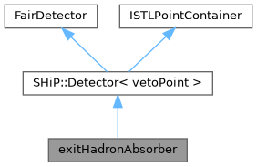
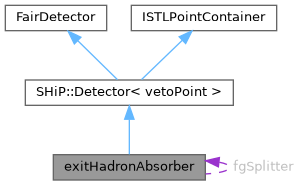

- Generated by
 1.9.8
1.9.8
|
FairShip
|
#include <exitHadronAbsorber.h>


Classes | |
| struct | WeightHistory |
Public Member Functions | |
| exitHadronAbsorber (const char *Name, Bool_t Active) | |
| exitHadronAbsorber () | |
| ~exitHadronAbsorber () override | |
| void | Initialize () override |
| Bool_t | ProcessHits (FairVolume *v=nullptr) override |
| void | Register () override |
| void | ConstructGeometry () override |
| void | FinishRun () override |
| void | PreTrack () override |
| void | PostTrack () override |
| void | BeginEvent () override |
| void | FinishEvent () override |
| void | SetNSplits (Int_t n) |
| void | SetIntermediateNSplits (Int_t n) |
| void | SetMaxSplitBuffer (Int_t n) |
| void | SetMaxEventSize (Int_t n) |
| void | SetSplitMultipleTimes () |
| void | SetEnergyCut (Float_t emax) |
| void | SetOnlyMuons () |
| void | SetOpt4DP () |
| void | SkipNeutrinos () |
| void | SetZposition (Float_t x) |
| void | SetVetoPointName (TString name) |
| void | SetCylindricalPlane () |
| void | SetUseCaveCoordinates () |
| Public Member Functions inherited from SHiP::Detector< vetoPoint > | |
| Detector ()=default | |
| Detector (const char *Name, Bool_t Active, Int_t detID) | |
| Detector (const char *Name, Bool_t Active) | |
| ~Detector () override=default | |
| vetoPoint * | AddHit (Args &&... args) |
| void | Initialize () override |
| void | Reset () override |
| void | EndOfEvent () override |
| void | Register () override |
| TClonesArray * | GetCollection (Int_t iColl) const override |
| void | UpdatePointTrackIndices (const std::vector< Int_t > &indexMap) override |
| Update track indices in point collection after track filtering. | |
| void | SetSpecialPhysicsCuts () override |
| void | FinishPrimary () override |
| void | FinishRun () override |
| void | BeginPrimary () override |
| void | PostTrack () override |
| void | PreTrack () override |
| void | BeginEvent () override |
| void | CopyClones (TClonesArray *cl1, TClonesArray *cl2, Int_t offset) override |
| Public Member Functions inherited from ISTLPointContainer | |
| virtual | ~ISTLPointContainer ()=default |
Static Public Member Functions | |
| static void | SplitStepHook (const G4Step *step) |
Static Public Attributes | |
| static constexpr std::size_t | kShowerSafetyFactor = 500 |
Private Member Functions | |
| void | DiscardBufferedClones () |
| secondaries already rescaled | |
| void | SplitStep (const G4Step *step) |
| Int_t | SplitSetOf (Int_t trackId, Double_t weight) |
Static Private Member Functions | |
| static void | RequestCloneCarrier () |
Private Attributes | |
| std::set< std::string > | fSplitVolumes |
| Long64_t | fHookSteps = 0 |
| Int_t | fUniqueID = 0 |
| Bool_t | fOnlyMuons |
| Bool_t | fSkipNeutrinos |
| flag if only muons should be stored | |
| TString | fVetoName |
| flag if neutrinos should be ignored | |
| TString | fPlaneVolName |
| Double_t | fzPos |
| name of the sensitive plane volume | |
| Bool_t | withNtuple |
| zPos, optional | |
| TNtuple * | fNtuple |
| special option for Dark Photon physics studies | |
| Float_t | EMax = 0. |
| Bool_t | fCylindricalPlane |
| max energy to transport | |
| Bool_t | fUseCaveCoordinates = kFALSE |
| cylindrical sensPlane flag | |
| int32_t | fNsplits |
| set position from cave | |
| int32_t | fIntermediateNsplits |
| std::size_t | fMaxSplitBuffer = 25'000 |
| std::size_t | fMaxEventSize = 5'000'000 |
| Bool_t | fSplitBufferLimitWarned = kFALSE |
| Bool_t | fEventSizeLimitWarned = kFALSE |
| Bool_t | fSplitOnce |
| std::vector< TrackBuffer > | fSecondaryBuffer |
| std::set< Int_t > | fCloneTracks |
| Int_t | fLastSplitTrackID = -1 |
| Int_t | fLastSplitStep = -1 |
| std::map< Int_t, Int_t > | fSplitSetOfTrack |
| std::vector< Double_t > | fSplitSetWeight |
| Int_t | fNextSplitSet = 0 |
| indexed by set ID | |
| Int_t | fSplitDecays = 0 |
| Int_t | fClonesBuffered = 0 |
| decays replaced by clones | |
| Int_t | fContinuedDecays = 0 |
| clones created for those decays | |
| Int_t | fLostBufferEvents = 0 |
| natural decays replaced by a continuation | |
| Int_t | fLostCloneTracks = 0 |
| events ending with unflushed clones | |
| Double_t | fLostCloneWeight = 0. |
| clones which were never tracked | |
| TFile * | fout |
| summed weight of those clones | |
| TClonesArray * | fElectrons |
| Int_t | index |
Static Private Attributes | |
| static constexpr Int_t | kNoCarrier = -1 |
| static constexpr Int_t | kCarrierRequested = -2 |
| static Int_t | fgCarrierTrackID = exitHadronAbsorber::kNoCarrier |
| static std::set< Int_t > | fgReplacedDecays |
| static std::set< Int_t > | fgReplacedTracks |
| static std::map< Int_t, WeightHistory > | fgWeightHistory |
| static std::set< Int_t > | fgWeightCorrected |
| static exitHadronAbsorber * | fgSplitter = nullptr |
Additional Inherited Members | |
| Protected Attributes inherited from SHiP::Detector< vetoPoint > | |
| Int_t | fEventID |
| Int_t | fTrackID |
| event index | |
| Int_t | fVolumeID |
| track index | |
| TLorentzVector | fPos |
| volume id | |
| TLorentzVector | fMom |
| position at entrance | |
| Double_t | fTime |
| momentum at entrance | |
| Double_t | fLength |
| time | |
| Double_t | fELoss |
| length | |
| std::vector< vetoPoint > * | fDetPoints |
| energy loss | |
| TGeoVolume * | fDetector |
Definition at line 39 of file exitHadronAbsorber.h.
| exitHadronAbsorber::exitHadronAbsorber | ( | const char * | Name, |
| Bool_t | Active | ||
| ) |
Definition at line 119 of file exitHadronAbsorber.cxx.
| exitHadronAbsorber::exitHadronAbsorber | ( | ) |
Definition at line 131 of file exitHadronAbsorber.cxx.
|
inlineoverride |
Definition at line 43 of file exitHadronAbsorber.h.
|
override |
Definition at line 451 of file exitHadronAbsorber.cxx.
|
overridevirtual |
Create the detector geometry
Implements SHiP::Detector< vetoPoint >.
Definition at line 858 of file exitHadronAbsorber.cxx.
|
private |
secondaries already rescaled
Definition at line 473 of file exitHadronAbsorber.cxx.
|
override |
Definition at line 467 of file exitHadronAbsorber.cxx.
|
override |
Definition at line 788 of file exitHadronAbsorber.cxx.
|
override |
Definition at line 397 of file exitHadronAbsorber.cxx.
|
override |
Definition at line 506 of file exitHadronAbsorber.cxx.
|
override |
Definition at line 616 of file exitHadronAbsorber.cxx.
|
override |
This method is called from the MC stepping
Definition at line 164 of file exitHadronAbsorber.cxx.
|
override |
Definition at line 947 of file exitHadronAbsorber.cxx.
|
inlinestaticprivate |
Definition at line 102 of file exitHadronAbsorber.h.
|
inline |
Definition at line 87 of file exitHadronAbsorber.h.
|
inline |
Definition at line 81 of file exitHadronAbsorber.h.
|
inline |
Definition at line 71 of file exitHadronAbsorber.h.
| void exitHadronAbsorber::SetMaxEventSize | ( | Int_t | n | ) |
Definition at line 155 of file exitHadronAbsorber.cxx.
| void exitHadronAbsorber::SetMaxSplitBuffer | ( | Int_t | n | ) |
Definition at line 144 of file exitHadronAbsorber.cxx.
|
inline |
Definition at line 70 of file exitHadronAbsorber.h.
|
inline |
Definition at line 82 of file exitHadronAbsorber.h.
|
inline |
Definition at line 83 of file exitHadronAbsorber.h.
|
inline |
Definition at line 74 of file exitHadronAbsorber.h.
|
inline |
Definition at line 88 of file exitHadronAbsorber.h.
|
inline |
Definition at line 86 of file exitHadronAbsorber.h.
|
inline |
Definition at line 85 of file exitHadronAbsorber.h.
|
inline |
Definition at line 84 of file exitHadronAbsorber.h.
|
private |
Definition at line 492 of file exitHadronAbsorber.cxx.
|
private |
Definition at line 209 of file exitHadronAbsorber.cxx.
|
static |
Definition at line 203 of file exitHadronAbsorber.cxx.
|
private |
Definition at line 168 of file exitHadronAbsorber.h.
|
private |
decays replaced by clones
Definition at line 210 of file exitHadronAbsorber.h.
|
private |
Definition at line 198 of file exitHadronAbsorber.h.
|
private |
clones created for those decays
Definition at line 211 of file exitHadronAbsorber.h.
|
private |
max energy to transport
Definition at line 169 of file exitHadronAbsorber.h.
|
private |
Definition at line 217 of file exitHadronAbsorber.h.
|
private |
Definition at line 192 of file exitHadronAbsorber.h.
|
staticprivate |
Definition at line 99 of file exitHadronAbsorber.h.
|
staticprivate |
Definition at line 111 of file exitHadronAbsorber.h.
|
staticprivate |
split tracks whose decay the clones replace
Definition at line 113 of file exitHadronAbsorber.h.
|
staticprivate |
Definition at line 145 of file exitHadronAbsorber.h.
|
staticprivate |
Definition at line 134 of file exitHadronAbsorber.h.
|
staticprivate |
Definition at line 133 of file exitHadronAbsorber.h.
|
private |
Definition at line 150 of file exitHadronAbsorber.h.
|
private |
Definition at line 174 of file exitHadronAbsorber.h.
|
private |
Definition at line 202 of file exitHadronAbsorber.h.
|
private |
Definition at line 201 of file exitHadronAbsorber.h.
|
private |
natural decays replaced by a continuation
Definition at line 212 of file exitHadronAbsorber.h.
|
private |
events ending with unflushed clones
Definition at line 213 of file exitHadronAbsorber.h.
|
private |
clones which were never tracked
Definition at line 214 of file exitHadronAbsorber.h.
|
private |
Definition at line 189 of file exitHadronAbsorber.h.
|
private |
Definition at line 184 of file exitHadronAbsorber.h.
|
private |
indexed by set ID
Definition at line 207 of file exitHadronAbsorber.h.
|
private |
set position from cave
Definition at line 172 of file exitHadronAbsorber.h.
|
private |
special option for Dark Photon physics studies
Definition at line 167 of file exitHadronAbsorber.h.
|
private |
Definition at line 161 of file exitHadronAbsorber.h.
|
private |
summed weight of those clones
Definition at line 216 of file exitHadronAbsorber.h.
|
private |
Definition at line 164 of file exitHadronAbsorber.h.
|
private |
Definition at line 197 of file exitHadronAbsorber.h.
|
private |
flag if only muons should be stored
Definition at line 162 of file exitHadronAbsorber.h.
|
private |
Definition at line 191 of file exitHadronAbsorber.h.
|
private |
Definition at line 209 of file exitHadronAbsorber.h.
|
private |
Definition at line 193 of file exitHadronAbsorber.h.
|
private |
Definition at line 205 of file exitHadronAbsorber.h.
|
private |
Definition at line 206 of file exitHadronAbsorber.h.
|
private |
Definition at line 147 of file exitHadronAbsorber.h.
|
private |
Definition at line 160 of file exitHadronAbsorber.h.
|
private |
cylindrical sensPlane flag
Definition at line 170 of file exitHadronAbsorber.h.
|
private |
flag if neutrinos should be ignored
Definition at line 163 of file exitHadronAbsorber.h.
|
private |
name of the sensitive plane volume
Definition at line 165 of file exitHadronAbsorber.h.
|
private |
Definition at line 218 of file exitHadronAbsorber.h.
|
staticconstexprprivate |
Definition at line 98 of file exitHadronAbsorber.h.
|
staticconstexprprivate |
Definition at line 97 of file exitHadronAbsorber.h.
|
staticconstexpr |
Definition at line 54 of file exitHadronAbsorber.h.
|
private |
zPos, optional
Definition at line 166 of file exitHadronAbsorber.h.